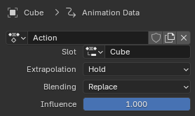
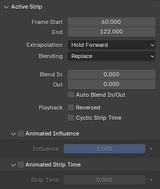
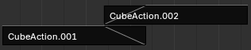
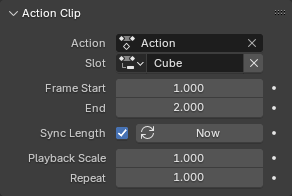

Sidebar¶
Edited Action¶
Tham khảo
- Panel:
Sidebar ‣ Edited Action

Panel Edited Action.¶
Chứa các cài đặt cho action đang hoạt động của object. Chỉ hiển thị khi Action Track được chọn.
- Action
Một menu data-block nơi bạn có thể xem, thay đổi và xóa action đang hoạt động. Xem thêm Action trong Action Editor.
- Slot
Slot bên trong action đang hoạt động sẽ dùng.
- Extrapolation
Quyết định action có ảnh hưởng đến các frame trước/sau ranh giới của nó hay không sau khi được đẩy xuống thành một strip. (Miễn là nó vẫn còn là action đang hoạt động, Hold sẽ được dùng bất kể lựa chọn.)
- Hold
Các giá trị thuộc tính tại keyframe đầu tiên của action cũng được áp dụng cho các frame trước đó (nếu strip là strip đầu tiên trong track). Các giá trị tại keyframe cuối cùng của nó cũng được áp dụng cho các frame sau đó (cho đến strip kế tiếp).
- Hold Forward
Các giá trị thuộc tính tại keyframe cuối cùng của action cũng được áp dụng cho các frame sau đó (cho đến strip kế tiếp).
- Nothing
Các thuộc tính được animation quay trở về giá trị mặc định khi ở ngoài ranh giới của strip.
- Blending
Cách kết hợp giá trị thuộc tính của action với giá trị của các track bên dưới.
- Replace
Ghi đè lên các giá trị do các track bên dưới tạo ra. Nếu Influence nhỏ hơn 1, thay vào đó sẽ dùng interpolation tuyến tính giữa giá trị trước đó và giá trị mới.
- Multiply, Subtract, Add
Blend các giá trị của action với giá trị của các track bên dưới bằng một phép tính đơn giản. Nếu Influence nhỏ hơn 1, sẽ dùng interpolation tuyến tính giữa các giá trị trước đó và các giá trị vừa tính được.
\(result = mix(previous, previous (+-×) value, influence)\)
- Combine
Tùy vào loại của từng thuộc tính, một trong các phương thức sau sẽ được chọn tự động:
- Axis/Angle Rotation
\(result = previous + value × influence\)
Kết quả là lấy trung bình trục và cộng thêm lượng xoay.
- Quaternion Rotation
Toán học quaternion được áp dụng cùng lúc lên cả bốn kênh của thuộc tính:
\(result = {previous} × {value} ^ {influence}\)
- Proportional (Scale)
\(result = previous × (value / default) ^ {influence}\)
- Các loại khác
\(result = previous + (value - default) × {influence}\)
Ghi chú
Vì chế độ blend này dùng phép nhân quaternion để tính các thuộc tính Quaternion Rotation, nó luôn điều khiển cả bốn kênh trong lúc phát, và Insert Single Keyframe bị buộc phải chèn cả bốn key. Các loại kênh khác vẫn có thể được tạo key riêng lẻ.
- Influence
Mức độ action đóng góp vào kết quả của stack NLA.
Strip¶
- Name
Tên của strip.
- Mute (checkbox)
Khi bỏ chọn, strip sẽ không còn đóng góp vào animation. Nó được hiển thị với viền đứt nét để biểu thị điều này.
Active Strip¶
Tham khảo
- Panel:
Sidebar ‣ Strip ‣ Active Strip

Panel Active Strip.¶
Chứa các thuộc tính chung của strip.
- Frame Start
Frame mà strip bắt đầu. Thay đổi giá trị này sẽ di chuyển strip nhưng giữ nguyên thời lượng của nó.
- Frame End
Frame mà strip kết thúc. Thay đổi giá trị này cũng sẽ thay đổi Action Clip Frame End, từ đó cắt bớt hoặc kéo dài action. Nếu thay vào đó bạn muốn tăng tốc hoặc giảm tốc nó, hãy scale strip bằng Strip ‣ Transform ‣ Scale hoặc điều chỉnh cài đặt Playback Scale.
- Extrapolation
Xem Extrapolation.
- Blending
Xem Blending.
- Blend In, Out
Cần bao nhiêu frame để influence của strip tăng dần ở đầu và giảm dần ở cuối.

Hai strip với Auto Blend được bật.¶
- Auto Blend In/Out
Tự động tính Blend In/Out bằng cách xét các strip trong track phía trên hoặc phía dưới có chồng lấn về thời gian với strip hiện tại.
- Playback
- Reversed
Khiến strip phát ngược lại.
- Cyclic Strip Time
Có nên quay Animated Strip Time trở về điểm bắt đầu khi nó vượt quá Action Clip Frame End hay không.
Animated Influence¶
Cho phép bạn chỉ định thủ công, và tạo animation, cho mức độ ảnh hưởng của strip đến animation. Đây là một cách thay thế cho các cài đặt (Auto) Blend In/Out ở trên.
Để tạo keyframe cho influence, trước tiên hãy nhập một giá trị, rồi hoặc nhấp Insert Keyframe trong menu ngữ cảnh của nó, hoặc nhấn I khi di chuột tới nó. Bạn có thể xem các keyframe này trong chẳng hạn Graph Editor.
Animated Strip Time¶
Cho phép bạn chỉ định thủ công, và tạo animation, cho frame mà action bên dưới được lấy mẫu.
Ghi chú
Dù cài đặt này có tên là Strip Time, giá trị của nó là số frame bên trong action, chứ không phải bên trong strip. Nếu bạn có một action trải từ frame 1 đến frame 50 được một strip tham chiếu trải từ frame 101 đến 150, bạn sẽ đặt Strip Time thành 1 để thấy keyframe đầu tiên, chứ không phải 101.
Kết hợp với Cyclic Strip Time, điều này cho phép bạn phát các keyframe của action nhiều lần trong một strip duy nhất. Ví dụ, giả sử các keyframe của action nằm giữa frame 1 và 50. Nếu bạn tạo animation cho strip time đi từ 1 đến 100, các keyframe sẽ được phát hai lần (với tốc độ gấp đôi).
Tuy nhiên, trên thực tế, dùng cài đặt Repeat mô tả bên dưới sẽ dễ hơn.
Action Clip¶
Tham khảo
- Panel:
Sidebar region ‣ Strip ‣ Action Clip

Panel Action Clip.¶
Chứa các thuộc tính riêng cho strip kiểu Action.
- Action
Action được strip tham chiếu.
- Slot
Slot bên trong action sẽ dùng.
- Frame Start, End
Bao nhiêu phần của action sẽ được dùng. Bằng cách điều chỉnh các giá trị này, bạn có thể cắt bớt hoặc kéo dài action (và cả strip, vì Frame End của nó sẽ thay đổi theo). Nếu bạn kéo dài action, F-Curve Extrapolation sẽ có hiệu lực.
Một trường hợp các cài đặt này hữu ích là với animation tuần hoàn, nơi keyframe đầu tiên và keyframe cuối cùng của action có cùng giá trị (nghĩa là giá trị này được áp dụng trong hai frame khi animation lặp lại). Bằng cách giảm Frame End, bạn có thể loại bỏ keyframe cuối cùng và để giá trị chỉ áp dụng trong một frame thay vì hai.
- Sync Length
Tự động đặt Frame Start/End về keyframe đầu tiên/cuối cùng của action khi thoát Tweak Mode.
- Now
Đặt Frame Start/End về keyframe đầu tiên/cuối cùng của action.
- Playback Scale
Khiến animation phát nhanh hơn (scale < 1) hoặc chậm hơn (scale > 1) so với action gốc.
- Repeat
Khiến action được phát nhiều lần.
Action¶
Tham khảo
- Panel:
Sidebar region ‣ Strip ‣ Action
Xem Action Properties.
Modifiers¶
Tham khảo
- Panel:
Sidebar region ‣ Modifiers
Modifier của strip cho phép bạn thay đổi không phá hủy tất cả các curve bên trong action của strip.
Xem F-Curve Modifiers.